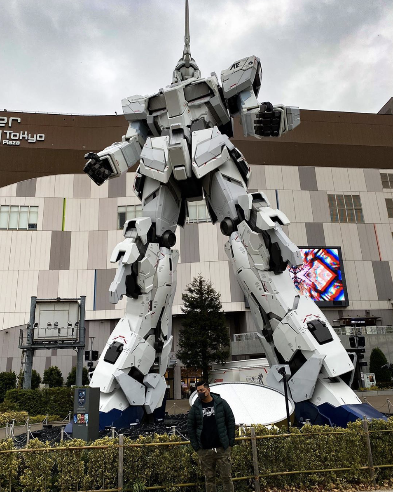
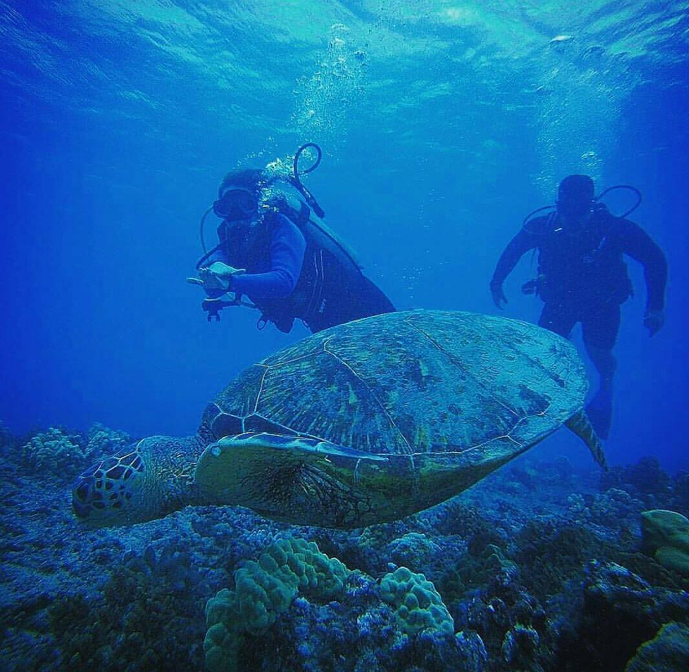
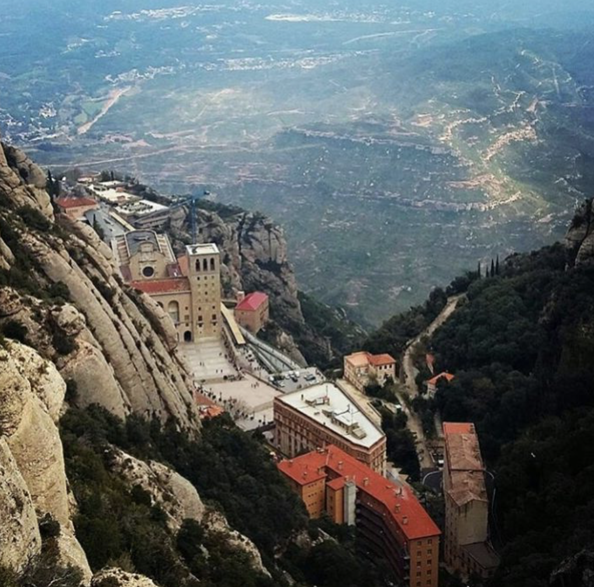
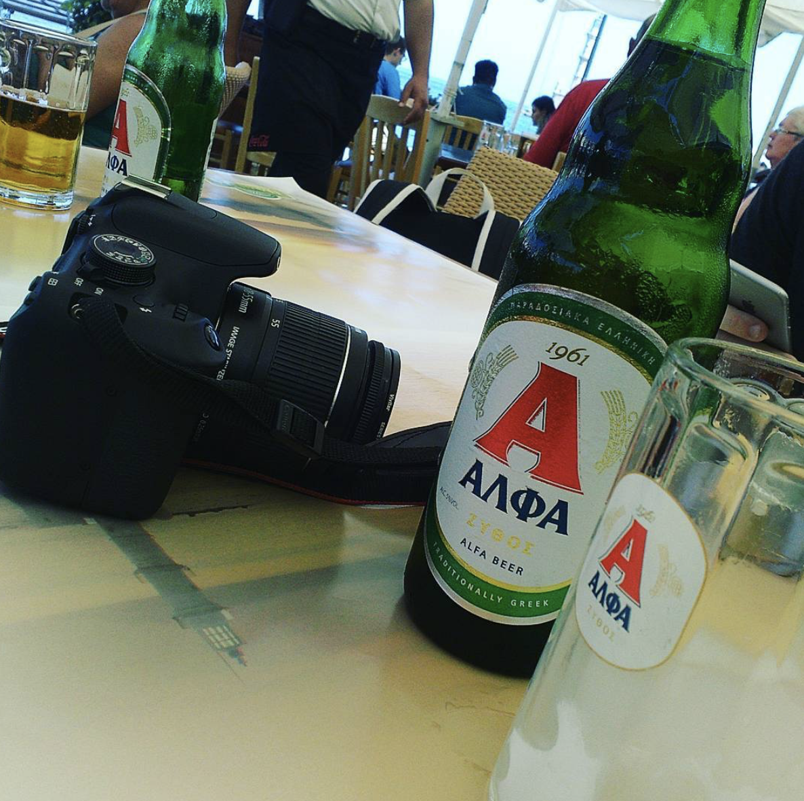
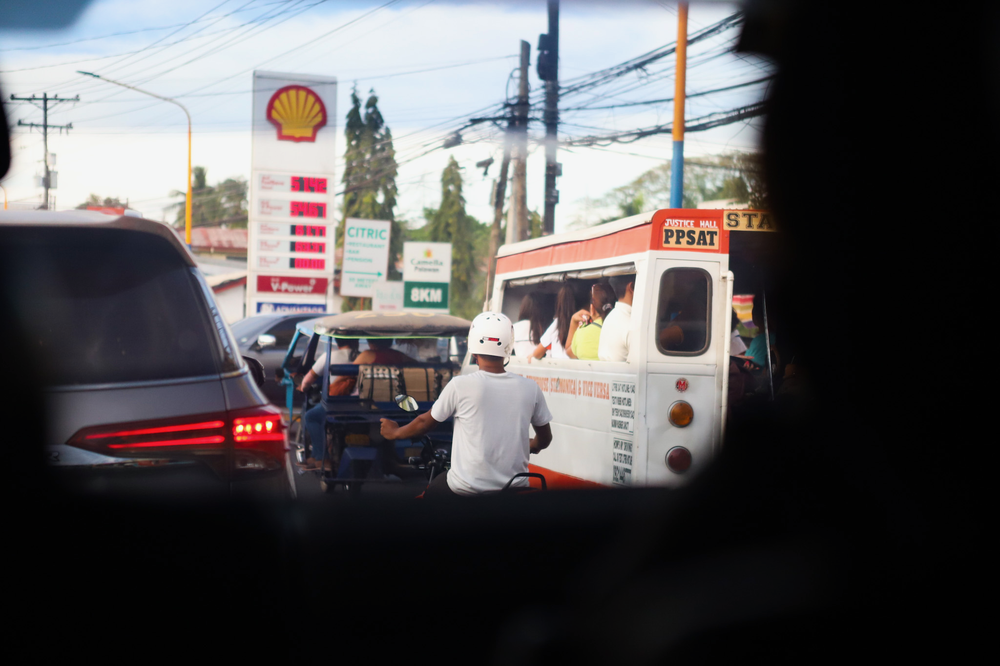

About the Author
Aldrin Brillante has spent majority of his life traveling the world for both
work and leisure, enjoying the luxuries and mysteries of more than 40 countries and more
than 100 cultures. Having experienced both sides of the coin, Aldrin has traveled
to various parts of the world, discovering his mistakes and achievements of traveling
along the way. He is happiest traveling with his trusty guitar, his swimming fins,
and his camera.
Now aspiring to become a fully fledged software engineer, Aldrin now writes
this single page site in hopes for a good grade.
Info
This Single Page Site is formatted to explain general tips on traveling the world.
Whether it is what to do, what to bring, or even where to go and what resources to use,
this site covers the author's subjective views on what you may need to know when you step
off to travel internationally!
All pictures displayed are of me (the author) and/or of my photography :)
Where To Go & What Resources To Use
-

Use Yelp
Whether it's your first time traveling to your destination or even the tenth time, Yelp is always a useful tool to see what is considered a hotspot in your area! Yelp collects data and user reviews to explain to you what is considered popular around your area, depending on the radius of your choosing. Without Yelp, I never would have came across this amazing Gundam figure in Tokyo, Japan :)
-

No Matter Where You Are, Find Water
Where there is water, there is life! :D
Whether you are traveling deep inside a country or by it's beachy coastline, you will always find fun activites by the ripples and tides. Dozens of countries are known to have famous activities by the waters even if they don't have a beach! Lakes, ponds, and rivers are perfect for the best of fun as well! Examples of amazing water activites are scuba diving, free diving, water rafting, lantern festivals, culture festivals, or even just enjoying the local eats with a view, making your travels even more worth it. :) -

Go on a Hike!
Don't be afraid to walk on new terrains while you are traveling, no matter the altitude or weather! There are hikes for all ages and difficulties and for all types of weather condition in every country. To those who are afraid of heights, there are even hikes friendly for situations such as that. My biggest regret every single time I leave a country was that I wasn't able to hike its local terrians enough.
Have no regrets! Go on a hike!
What To Bring
-

Bring a Camera
More likely than not, you will always have a scenario after traveling in which you want to reminisce your adventures and look back at what you have done. The best way to do that is to look back at the pitures you have taken during the trip! That is why it is always best for you to bring a camera with you on your travels! It can be as small as the camera on your phone, or as fancy as a professional dslr and drone! Whatever the case, having pictures available for you to look back at is always nice to have. :)
-
ALWAYS BRING FINS
I cannot push this subjective comment enough to you. Always always always alwaysssss bring a pair of swimming fins when you are traveling the world. Whether or not you know your planned water activities will have rentals, it is always the best to have your own pair in which your feet are already comfortable in. BRING FINS. The earth is 71% water, so don't miss out on 2/3's of the world's adventures simply because you decided against it XD As mentioned prior to this, numerous countries have water activites, and many of those countires provide travelers to dive freely. It is always best to pick and purchase your fins prior to your travels, for it becomes a lot harder to find specific types and sizes once you start traveling. Whether you are swimming in the waters of Hawaii, the rivers of Zimbabwe, or enjoying the waters of Santorini in Greece, having your own pair of swimming fins is a must-have priority when you travel internationally.
If I didn't have fins, I never would have had the opportunity to swim with the many beauties under the sea, whether it was dolphins, whale sharks, or this little fellow above (enjoy the video :D ) -

Always Bring Cash
When traveling internationally, your local banks and methods of payment are most likely not acceptable in many parts of the world, and that is why it is always better to bring cash alongside you. There are currency exchanges in almost every airport and train station, giving you the convenience of swapping your currency when you arrive at your destination. It is also generally better to handle your purchases with cash when traveling internationally. That way, you can limit yourself on spending by only allowing a certain amount of money to be spent on your destination. Another major reason as to why you should always bring cash is because of the travel limitations that each country has, usually condoning taxis and trains for convenience. Usually, public trasportation requires cash to travel in their transit if you do not have their local cards for currency, and that is why it becomes handy to always have cash along.
What to Eat
I saved the best for last! Food is probably the most unique experience you will have when traveling internationally. Each country have dozens of different cultures, and each cultures has dozens of types of food. My one recommendation when deciding on what to eat is to always try the local eats wherever you are. It doesn't have to be as unordinary as a bowl of bat soup in a random market, but always try to reach past your comfort zone to taste the delicacies of the countries you visit. Every country is proud to present their food to travelers, and so you might as well treat yourself to it!
Conclusion
Traveling the world, whether you feel ready or not, is an amazing experience and opportunity for each and every one of us. The last thing I ask is that you travel freely and happily. Happy adventuring! Now get lost and wander where the wifi is weak :)